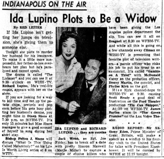
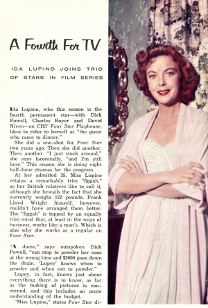

I was the guest who never left and became the fourth star of Four Star Playhouse and loved every minute of it—and never missed directing.
— Ida Lupino
In late 1953, Ida Lupino approached a major transition in her career as Hollywood movie star-turned-independent producer and director. Lupino, at age 35, had been creating low budget feature films with high production and creative values for the last five years. With The Filmakers, the production company she founded with former husband Collier Young, she served as producer, writer, businesswoman and director, as well as occasionally returning to acting. But now her industry was being upended by the explosion of the audience for broadcast television.
In Lupino's accommodation to the small-screen revolution, the acclaimed anthology series Four Star Playhouse would play a dominant role. When she first starred in an episode of the show at the end of 1953, she viewed television with apprehension and hesitation. At the conclusion of her run of nineteen episodes in mid-1956, she had fully embraced TV as her creative medium of choice—the medium in which she focused her career for the next twenty-plus years.
Prologue
After giving birth to her only daughter in April 1952, Lupino resumed her work at The Filmakers with her characteristic drive and energy, directing The Hitch-Hiker and The Bigamist over the succeeding year, plus planning and writing a film to star her husband, Howard Duff. Amidst the industry turmoil of 1953, she sought options to diversify her creative opportunities in Hollywood.
Meanwhile in 1952, the CBS anthology program Four Star Playhouse was created by agent Don Sharpe and three veteran movie stars: Dick Powell, Charles Boyer, and David Niven. The show consisted of 30-minute episodes, each of which was an independent story. The three actors would rotate starring appearances to ensure their workloads remained manageable.
The "four stars" in the show's name was a relic from a short-lived radio version in 1949 that had featured Fred MacMurray, Loretta Young, Robert Cummings and Rosalind Russell. The initial prospects for TV's "fourth star", Joel McCrea and Rosalind Russell, backed out before the show began, so the fourth position in the televised version would be filled by guest stars. Ronald Colman, Merle Oberon and Joan Fontaine were notable repeat guest stars early on. Premiering on Sep. 25, 1952, the program soon attracted substantial audiences and critical raves, so in its second season CBS expanded it from alternate-week showings into a weekly series.
Lupino's first season: 1953-'54
In the fall of 1953, as Four Star began its second season, Lupino was completing work on her latest feature film production for The Filmakers, The Bigamist. Her cinematographer on that film, George Diskant, encouraged her to join him on his latest project—Four Star Playhouse. Lupino's response: "Really George, you're out of your mind."
David Niven soon called up Lupino. As she related the story later, he said, "Lupy, Kupy, I know you're against television, but come on over and do a guest spot on our show anyway." She replied, "Oh, Niv, I can't. The whole thing scares me." Niven then said, "Come and do just one." And so Lupino did, filming her first episode in December.
Interestingly, Lupino signed to do a guest spot on a different anthology series, Ford Theater, shortly prior to signing for her Four Star appearance. It is likely the two episodes were filmed on back-to-back weeks, with the Ford Theater episode first. These were filmed just a few days after she attended the San Francisco world premiere of The Bigamist—which she had co-produced, directed and also starred in.
The Ford Theater episode was titled Marriageable Male and paired her with rising star Jack Lemmon in a comedy. Since the Ford show did not air until February, 1954, the Four Star episode House for Sale marked Lupino's television debut as an actress—on the last day of the year 1953.
House for Sale is a well-done thriller, where Lupino's character meets up with a man she thinks is a real estate agent for an open house—but the man is actually a psychopathic murderer. Such "woman in peril" roles were not Lupino's favorites, but came up repeatedly in her acting jobs in the first half of the 1950s, both in films and in her work on Four Star Playhouse.
For the remainder of the 1953-'54 season, Lupino did one more episode of Ford Theater, co-starring her husband Howard Duff, and two more episodes of Four Star Playhouse. Her primary focus continued to be on producing, writing and acting in feature films. The Filmakers production, Private Hell 36, occupied much of her energies for the first part of 1954.
Her company was struggling for existence by late 1954, however, and Lupino ramped up her television work in response. She also took the first of a handful of modest roles in feature films over the next few years—Women's Prison.
Lupino's second season: 1954-'55
Lupino focused her increased television work on Four Star Playhouse to the exclusion of other dramatic shows, heading six episodes. During this period, she officially left The Filmakers—promptly starting a new production company with husband Duff and ex-husband Young. The initial focus of this effort was on developing a sitcom to star her and Duff, satirizing their real-life roles as married movie stars with a stormy relationship. She dabbled in acting in feature films, taking top supporting roles in two major productions, The Big Knife and While the City Sleeps.
Her first Four Star episode of the season was The Adolescent, where she played a school teacher and disciplinarian called on to investigate misconduct involving her nephew. Columnist Eve Starr wrote: "Ida Lupino did it again on Four Star Playhouse's 'The Adolescent,' who was very well handled by young Robert Arthur. But we liked best of all Ida's few added pounds—and that's strictly a pure and sweet compliment. Her pretty face is prettier."
The next episode was another drama involving a youngster, Marked Down—though here, Lupino played a gold-digging woman. TV host Faye Emerson wrote that Lupino "sashayed stylishly through a script that had both tenderness and wit."
Later in the season, she played opposite William Talman in Eddie's Place. Talman had portrayed the title character in the earlier Lupino-directed feature film, The Hitch-Hiker. In a clever allusion to their previous association, the teleplay opens with Talman, driving a truck, picking up a stranded Lupino on a deserted road.
With All My Heart, aired on April 21, 1955, was one of the most notable episodes for Lupino and the press. She donned a false body to portray an overweight teacher in love with a man who viewed her as his best friend. She told columnist Aline Mosby that she wasn't concerned about losing her figure for art "because I've never gone through that frightening period of having been a glamour girl." She added, "Ever since I remember, I've played offbeat characters. When I read this script I wanted to do it. It's a wonderful love story. It doesn't make fun of fat people. It shows that it isn't what you look like, but what you are inside that people love." A year later, Lupino said that the most fan mail she had gotten during her Four Star tenure had been for this role.
She finished the season with Award, aired June 30. Lupino portrayed an Oscar-winning movie star who has just suffered horrendous reviews of her performance in her first Broadway show. Fellow Hollywood veteran Franchot Tone played a Broadway director that she approaches to help her improve. The show takes place on a single set with only the two actors and is quite lively. After Award was broadcast, Lupino told a columnist that the episode was based on true events: "'How we got away with it I'll never know,' [Lupino] grinned. 'But I'm not saying who the actress really is. Let people guess.'"
Lupino's third and final season: 1955-'56
By the second half of 1955, Lupino's focus had shifted almost completely to television. Her work on the pilot for her sitcom had come to fruition and it was slotted as an episode of Four Star Playhouse for the upcoming season. (It was filmed in the fall of 1955, but its airing was held back until the official sitcom run in early 1957.) She also signed on as the permanent "fourth star" and led a full complement of ten episodes that season.
TV Guide published a feature about her Four Star work in December, titled "A Fourth for TV: Ida Lupino joins trio of stars in film series".
At her admitted 35, Miss Lupino retains a remarkably trim "figgah", as her British relatives like to call it. ... The "figgah" is topped by an equally trim mind that, at least in the ways of business, works like a man's. ...
"A dame," says outspoken Dick Powell, "can stop to powder her nose at the wrong time and $3000 goes dow the drain. 'Lupey' knows when to powder and when not to powder."
Lupey, in fact, knows just about everything there is to know, as far as the making of pictures is concerned, and this includes an acute understanding of the budget.
Director Roy Kellino then extolled Lupino's virtues: "Miss Lupino is a professional. She is a trouper. She is never late. She always knows her lines. She knows how to improvise. And she will stand all day on a recently broken ankle because she knows that if the picture goes into another day of shooting, it will cost more money. I admire Miss Lupino tremendously."
Conforming to past patterns, she was not content with only acting—she also wrote the stories for two of her episodes this season. And, outside of Four Star, she resumed directing work—helming an episode of Screen Directors Playhouse for which she also had written the story. Lupino never directed any of her own Four Star episodes, saying of her acting, "I need a director."
Some of her notable episodes this season were Face of Danger, a western in which she played the same person in her 20s and at 100; One Way Out, another woman-in-peril story, but a particularly well-executed one that Lupino and Four Star considered turning into a feature film; and The Listener, where Lupino co-starred opposite her younger cousin, Richard Lupino, and played one of the most amoral characters of her career. For The Story of Emily Cameron, she wrote the original story, described in a contemporary summary as "about a woman who concocts a diabolical scene of wreaking vengeance upon her husband".
Lupino's work on Four Star Playhouse concluded with the airing on July 19, 1956 of one the best episodes—The Stand-In. Newspapers summarized her role as a woman "whose twenty bitter years in Hollywood as 'The Stand-In' for a star turn ambition to despair and her affection to secret hate." This episode was another that was adapted from an original story written by Lupino.
Show's End
In early 1956, Charles Boyer described the program to the press: "We, and I mean partners in 'Four Star Playhouse', Dick Powell, David Niven and Ida Lupino, have worked out a wonderful method of doing TV. But even doing a show once every four weeks becomes a chore after a while. It's like having a wildcat by the tail. You have to keep swinging."
Four Star Playhouse ceased production after the 1955-'56 season. While the show remained a hit with audiences and the sponsor wanted to continue, the CBS network gave the Thursday time slot to a new prestige dramatic show, Playhouse 90. Dick Powell, who had become the primary business force behind Four Star, was mollified by CBS picking up his new anthology show, Zane Grey Theater.
If somehow Four Star had continued into 1956-'57, Ida Lupino would not have been a part of it. CBS had picked up her sitcom with Howard Duff, Mr. Adams and Eve, and she was busy producing dozens of episodes to begin airing just after the new year.
A May 1956 article in the Pittsburgh Press described Lupino's experience over her three seasons on Four Star Playhouse:
"I never thought I could like TV," said Ida Lupino recently. That this attitude has undergone a radical change goes without saying, for she is now intimately identified with television as actress, director, writer and a shrewd investor.
“It’s a man’s world,” she says, ”and I’m glad I’m in it.” ... “I’ve known each one of them 20 years or more,” she says of her colleagues. “I’ve known David [Niven] 23 years. Boyer, I’ve known at least 20 years. I met Dick Powell the first weeks he was in Hollywood—that must be 24 years ago. I’m terribly fond of them all.”
A decade later, she wrote about Four Star, "I was the guest who never left... and loved every minute of it—and never missed directing."
The final word on Lupino's Four Star run came a few months after the final episode aired at the end of July, 1956. During the early weeks of the airing of her new sitcom, in February 1957, Lupino received an Emmy nomination for Best Continuing Performance in a Dramatic Series for her prior year's work on Four Star Playhouse.
Reruns of Four Star Playhouse continued for many years, released under different names. At times, the episodes for each of the stars were packaged separately, and so in the late 1950s and early '60s there was an "Ida Lupino Show" on many TV listings. As of this writing, nearly seventy years after their creation, sixteen of Lupino's nineteen episodes are available to view online.
Ida Lupino's episodes of Four Star Playhouse
Included in this list of the nineteen episodes that Ida Lupino filmed for Four Star Playhouse are the original air dates, as well as links to active online versions. Three episodes are not available anywhere I have been able to find, either online or physical media.
1953-'54, 3 episodes:
- 1953 Dec 31: House for Sale
- 1954 Jan 28: Indian Taker
- 1954 Apr 15: Masquerade
1954-'55, 6 episodes:
- 1954 Oct 28: The Adolescent
- 1954 Nov 25: Marked Down
- 1955 Jan 06: A Bag of Oranges
- 1955 May 10: Eddie's Place
- 1955 Apr 21: With All My Heart
- 1955 Jun 30: Award
1955-'56, 10 episodes:
- 1955 Oct 13: Face of Danger
- 1955 Nov 14: Looking Glass House
- 1955 Dec 15: One Way Out
- 1956 Jan 05: Dark Meeting
- 1956 Feb 02: The Listener
- 1956 Mar 29: The Story of Emily Cameron
- 1956 May 10: That Woman
- 1956 May 31: Beneath the Surface
- 1956 Jun 21: Woman Afraid
- 1956 Jul 19: The Stand-In
--
Sources
- Newspapers.com archives for United States newspapers
- Ida Lupino, Director: Her Art and Resilience in Times of Transition by Therese Grisham and Julie Grossman, Rutgers University Press
- Four Star Television Productions: A History of the Business, Series, and Pilots of the Iconic Television Production Company: 1952-1989 by Richard Irvin, BearManor Media
- Media History Digital Library archives of Hollywood fan magazines and trade papers
Quotes
- "I was the guest who never left..." — Me, Mother Directress by Ida Lupino, Action!, May-June 1967, as quoted by the Grisham-Grossman book
- "Really George, you're out of your mind..." — Ibid.
- "Lupy, Kupy, ..." — Ibid.
- "Ida Lupino did it again..." — Eve Starr syndicated column, Nov. 8, 1954
- "sashayed stylishly..." — Faye Emerson syndicated column, Dec. 1, 1954
- "because I've never gone through..." — Aline Mosby syndicated article, Mar. 17, 1955
- "How we got away with it..." — Erskine Johnson syndicated column, Jul. 30, 1955
- "At her admitted 35..." — TV Guide, A Fourth for TV, Dec. 3, 1955
- "I need a director." — Pittsburgh Press, Ida Lupino Acts, Writes, Directs, May 20, 1956
- "about a woman who concocts..." — Central New Jersey Home News, Mar. 18, 1956
- "whose twenty bitter years..." — Bedford Daily Times Mail, Jul. 14, 1956
- "We, and I mean partners..." — Walter Ames column, Los Angeles Times, Mar. 30, 1956
- "I never thought I could like TV..." — Pittsburgh Press, Ida Lupino Acts, Writes, Directs, May 20, 1956
--
This post is a contribution to the Classic Movie Blog Association's blogathon, Big Stars on the Small Screen. See the CMBA blog for the full list of contributions.

I really enjoyed this outstanding post, Peter. I'm an Ida Lupino fan from way back, and I've often wanted to check out Four Star Playhouse, but I never have. You can bet I will now, though, and I appreciate the links that will help in this endeavor. They all sound so interesting. Thank you for joining the blogathon! (What's with the reviews referring to Ida's weight, though? Brother!)
-- Karen
Posted by: Karen Hannsberry | May 15, 2023 at 10:39 AM
Thank you, Karen! I love this topic for a blogathon. Thanks for organizing it.
Posted by: P.M.Bryant | May 15, 2023 at 11:51 AM
I love this post and the topic of the blogathon. The television audience was so blessed to be able to see the work of Ida Lupino - and many other big screen stars - back when Hollywood meant movie stars. Great post about a hard working and serious artist.
Posted by: Marsha Collock | May 15, 2023 at 06:04 PM
Thanks, Marsha!
Posted by: P.M.Bryant | May 15, 2023 at 07:30 PM
Wow. I never knew anything about this show, and loved learning more about it and the "offbeat"-character loving Lupino. Such a fascinating woman.
Posted by: Leah | May 15, 2023 at 07:56 PM
Glad you enjoyed it, Leah!
Posted by: P.M.Bryant | May 15, 2023 at 10:07 PM
Enjoyed this review of Ida Lupino's transition to TV and her work on "Four Star Theater." Really informative and comprehensive. I've been a fan of hers since childhood, probably first saw her in the Sea Wolf or High Sierra on TV, and always kept an eye out for her films and TV appearances. Naturally I've looked forward to reading your post. Thanks for a great and engaging read. I'll be checking out the videos now.
Posted by: Lady Eve | May 16, 2023 at 03:29 PM
Really enjoyed this piece! I love that Ida took on television and learned to embrace it.
Posted by: Marci | May 16, 2023 at 06:56 PM
@LadyEve and @Marci, thanks for reading! I appreciate the encouraging comments.
Posted by: P.M.Bryant | May 17, 2023 at 03:23 PM
I just went to school!! Fantastic entry - enjoyable and informative. Lupino was such an important part of film and TV that we couldn't do without her in this event and you did her great justice. WOW! There is so much I have to watch. Not sure where to begin but I'll be using this post as a guide. Thank you!
Aurora
Posted by: Aurora | May 24, 2023 at 11:55 AM
Thanks, Aurora! I'm glad you enjoyed the article and I love your enthusiasm for diving into these shows.
Posted by: P.M.Bryant | May 27, 2023 at 08:46 PM